Jian Liu (Benjamin) 刘建Master studentAdvanced Imaging and Intelligent Analysis Laboratory
|
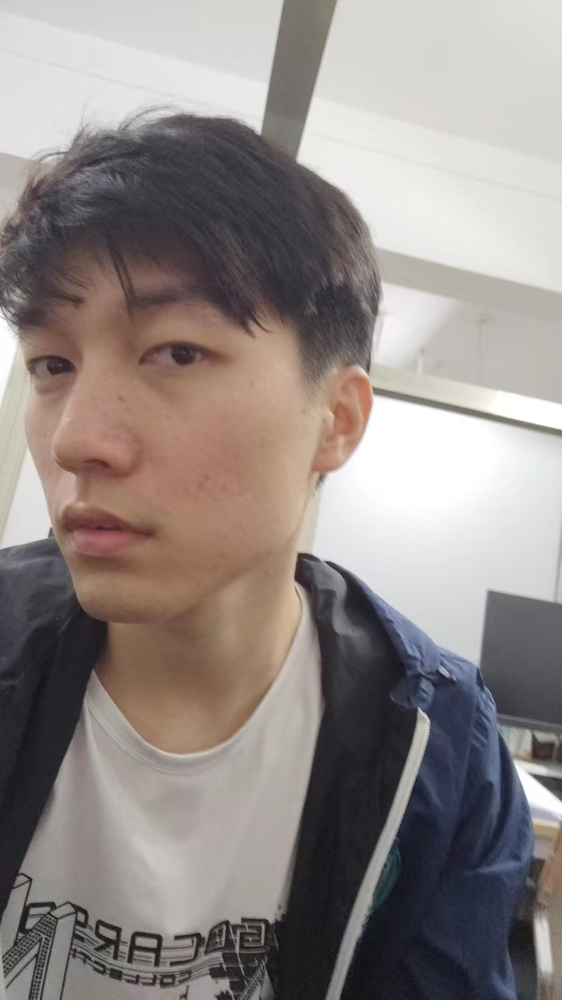 |
I am a final year Master student in Computer Science at Harbin Institute of Technology (HIT). I obtained my Bachelor's degree in Software Engineering from HIT in 2022. I am actively engaged in research focused on various aspects of 3D vision, including depth estimation, point cloud analysis, 3d occupancy prediction, AIGC 3D. Additionally, I am also involved in the exciting field of AI4Science, specifically in the area of airfoil design.
| 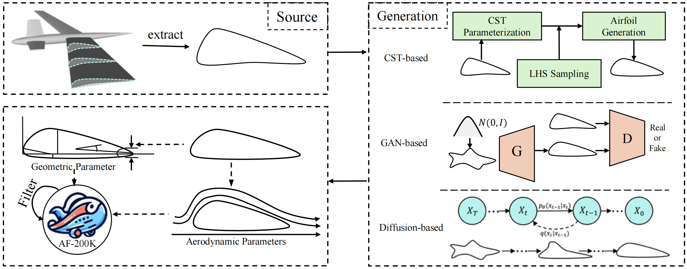 | AFBench: A Large-scale Benchmark for Airfoil Design Jian Liu, Jianyu Wu, Hairun Xie, Guoqing Zhang, Jing Wang, Wei Liu, Wanli Ouyang, Junjun Jiang, Xianming Liu, Shixiang Tang, Miao Zhang NeurIPS 2024 [PDF] [Github] [Project Page] |
| 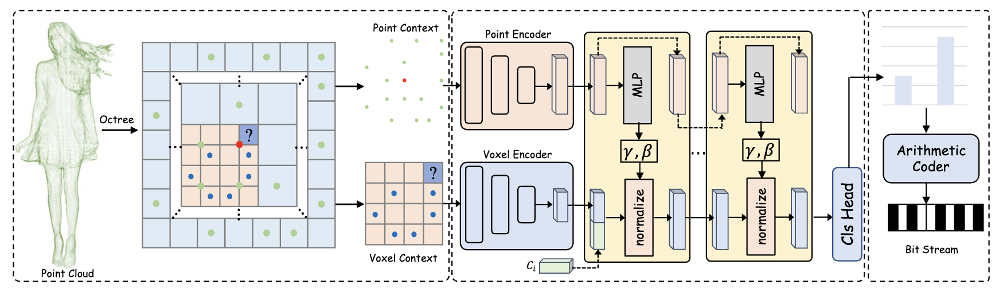 | PVContext: Hybrid Context Model for Point Cloud Compression Guoqing Zhang, Wenbo Zhao, Jian Liu, Yuanchao Bai, Junjun Jiang, Xianming Liu Arxiv 2024 [PDF] |
| 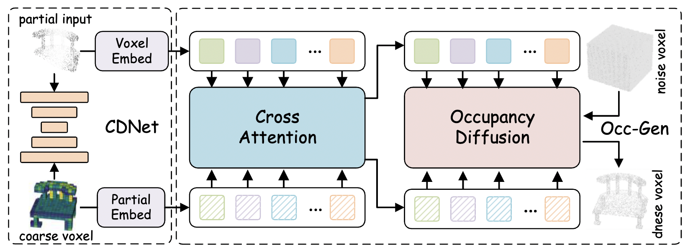 | Diffusion-Occ: 3D Point Cloud Completion via Occupancy Diffusion Guoqing Zhang, Jian Liu* Arxiv 2024 [PDF] |
| 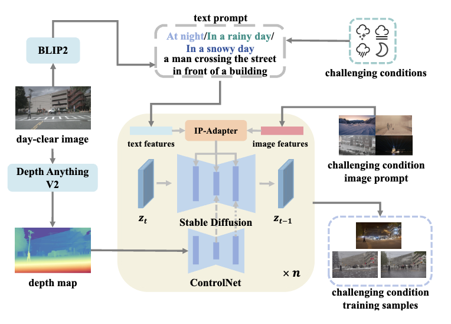 | Stealing Stable Diffusion Prior for Robust Monocular Depth Estimation Yifan Mao*, Jian Liu*, Xianming Liu Arxiv 2024 [PDF] [Github] [Project Page] |
| 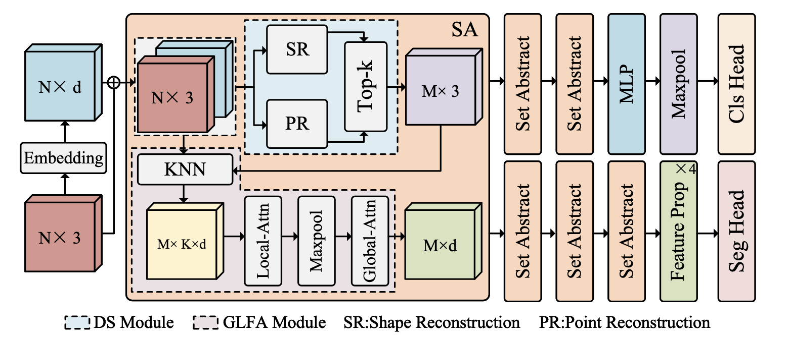 | REPS: Reconstruction-based Point Cloud Sampling Guoqing Zhang*, Jian Liu*, Wenbo Zhao, Xianming Liu Arxiv 2024 [PDF] [Github] |
| 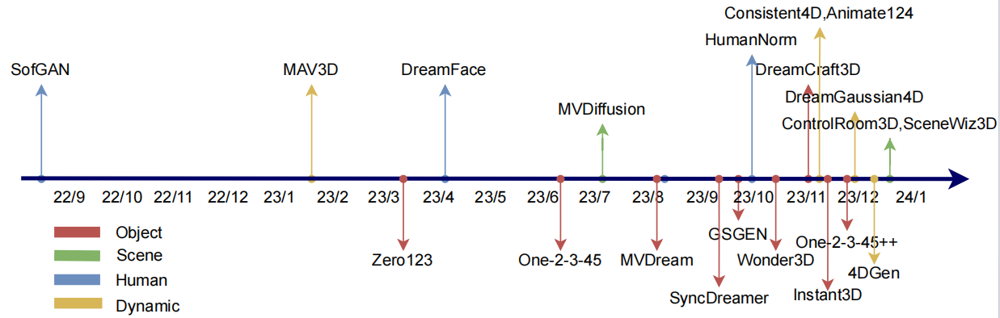 | A Comprehensive Survey on 3D Content Generation Jian Liu, Xiaoshui Huang, Tianyu Huang, Lu Chen, Yuenan Hou, Shixiang Tang, Ziwei Liu, Wanli Ouyang, Wangmeng Zuo, Junjun Jiang, Xianming Liu Arxiv 2024 [PDF] [Github] |
| 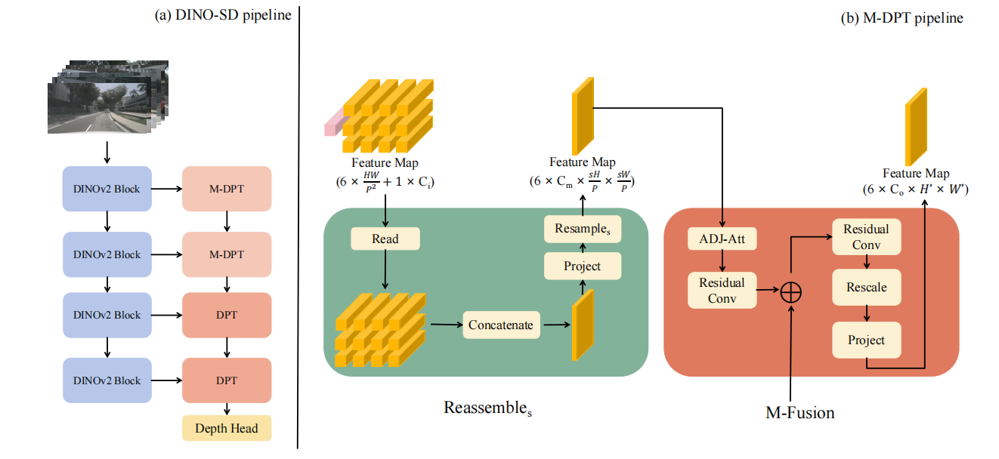 | DINO-SD: Champion Solution for ICRA 2024 RoboDepth Challenge Yifan Mao*, Ming Li*, Jian Liu*, Jiayang Liu, Zihan Qin, Cunxi Chu, Jialei Xu, Wenbo Zhao, Junjun Jiang, Xianming Liu ICRA24 RoboDrive Challenge [PDF] [Github] [Talk] |
| 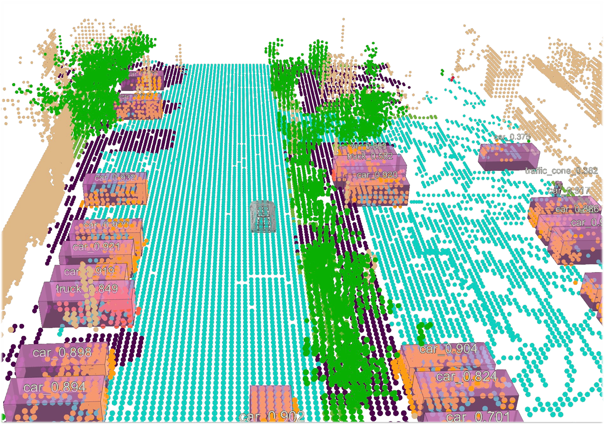 | OccTransformer: Improving BEVFormer for 3D camera-only occupancy prediction Jian Liu, Sipeng Zhang, Chuixin Kong, Wenyuan Zhang, Yuhang Wu, Yikang Ding, Borun Xu, Ruibo Ming, Donglai Wei, Xianming Liu CVPR23 Autonomous Driving Challenge [PDF] [Talk] |
| 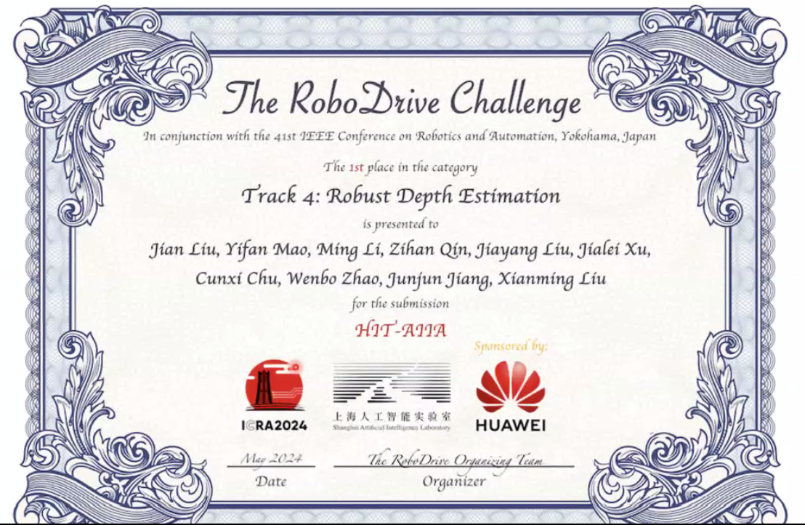 | 1st place at Robust Depth Estimation on RoboDrive Challenge, @ICRA 2024 Jian Liu, Yifan Mao, Ming Li, Zihan Qin, Jiayang Liu, Jialei Xu, Cunxi Chu, Wenbo Zhao, Junjun Jiang, Xianming Liu [Challenge Website] |
| 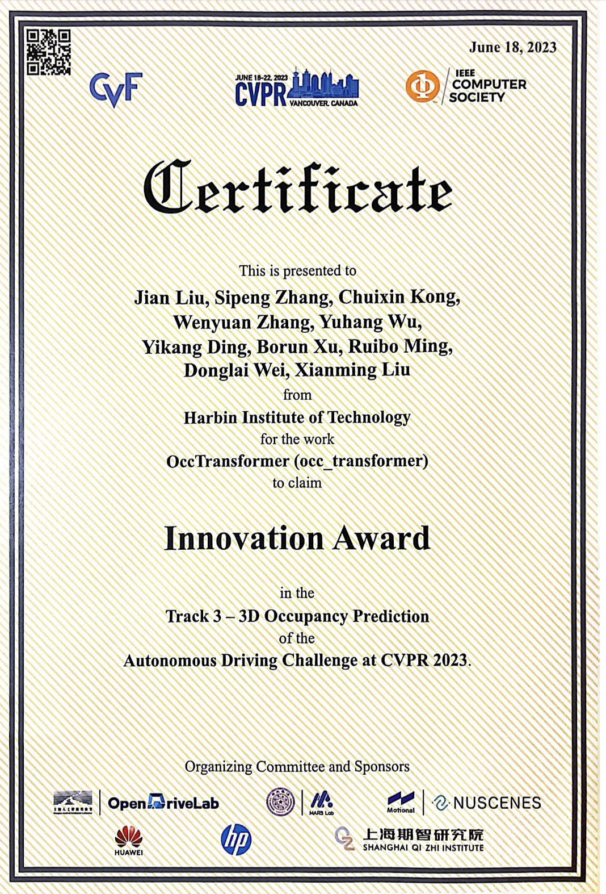 | Innovation Award at 3D occupancy prediction on autonomous driving challenge, @CVPR 2023 Jian Liu, Sipeng Zhang, Chuixin Kong, Wenyuan Zhang, Yuhang Wu, Yikang Ding, Borun Xu, Ruibo Ming, Donglai Wei, Xianming Liu [Challenge Website] |